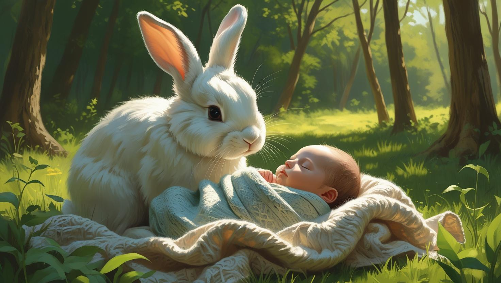

(forest)
"A Guardian in the Woods"
(baby)

Describe the relationship between the rabbit and the baby in this image.
In a sun-dappled forest filled with tall trees and whispering leaves, a gentle white rabbit became an unlikely guardian to a sleeping baby.
Wrapped in a cozy blanket, the baby lay peacefully among the grass, surrounded by the soft rustle of nature.
The rabbit sat vigil, its big dark eyes watchful and caring, as if guarding a precious treasure.
As the breeze danced through the woods, the rabbit's fluffy form seemed to blend with the tranquility of the forest, creating a moment of pure, tender harmony.
In this quiet woodscape, the rabbit's silent protection wove a tale of unexpected friendship and the beauty of nature's guardianship.